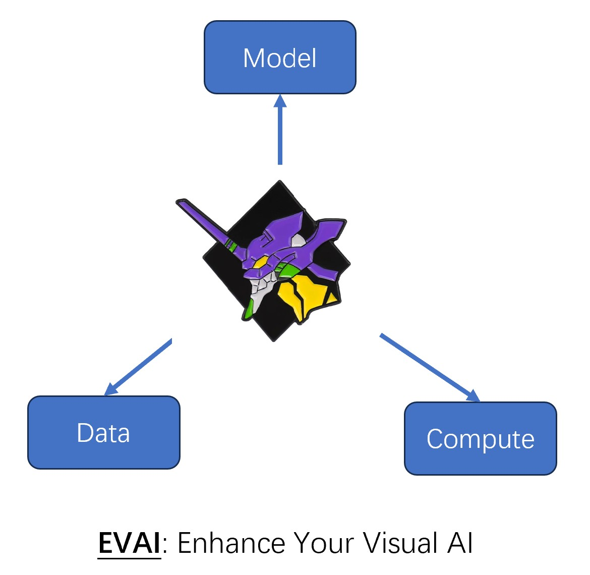

|
Lu Ming
I am a research scientist at AI Research Lab (AIRL), Intel Labs, where I work on Enhanced Visual AI (EVAI). I did my Ph.D focused on computer graphics and 3D vision at Tsinghua University, where I was advised by Prof. Zhang Li.
I'm especially interested in AI + Chips (adaptive ISP/neural compression for Codec/rendering acceleration for GPU/etc.), Neural Field (NeRF/3DGS/3D Occupancy/etc.), and Large Visual AI Models (SAM/Diffusion Model/LLaVA/etc.).
I'm also interested in applying EVAI techniques to digital human, autonomous driving, embodied AI, and AI4Science.
Enhancing visual AI by enhancing visual data/model/compute.
Research Intro /
Email /
CV /
Bio /
Google Scholar /
Github
|

|
[11] ThermalGaussian: Thermal 3D Gaussian Splatting
Rongfeng Lu, Hangyu Chen, Zunjie Zhu, Yuhang Qin, Ming Lu, Le Zhang, Chenggang Yan, Anke Xue
International Conference on Learning Representations (ICLR), 2025
|
[10] CABM: Content-Aware Bit Mapping for Single Image Super-Resolution Network with Large Input
Senmao Tian, Ming Lu, Jiaming Liu, Yandong Guo, Yurong Chen, Shunli Zhang
Conference on Computer Vision and Pattern Recognition (CVPR), 2023
|
[9] Adaptive Patch Exiting for Scalable Single Image Super-Resolution
Shizun Wang, Jiaming Liu, Kaixin Chen, Xiaoqi Li, Ming Lu, Yandong Guo
European Conference on Computer Vision (ECCV Oral), 2022
|
[8] Efficient Meta-Tuning for Content-Aware Neural Video Delivery
Xiaoqi Li, Jiaming Liu, Shizun Wang, Cheng Lyu, Ming Lu, Yurong Chen, Anbang Yao, Yandong Guo, Shanghang Zhang
European Conference on Computer Vision (ECCV), 2022
|
[7] Structure-aware Editable Morphable Model for 3D Facial Detail Animation and Manipulation
Jingwang Ling, Zhibo Wang, Ming Lu, Quan Wang, Chen Qian, Feng Xu
European Conference on Computer Vision (ECCV), 2022
|
[6] Semantically Disentangled Variational Autoencoder for Modeling 3D Facial Details
Jingwang Ling, Zhibo Wang, Ming Lu, Quan Wang, Chen Qian, Feng Xu
Transactions on Visualization and Computer Graphics (TVCG), 2022
|
[5] SamplingAug: On the Importance of Patch Sampling Augmentation for Single Image Super-Resolution
Shizun Wang, Ming Lu, Kaixin Chen, Jiaming Liu, Xiaoqi Li, Ming Wu
British Machine Vision Conference (BMVC), 2021
|
[4] Deep Likelihood Network for Image Restoration With Multiple Degradation Levels
Yiwen Guo, Ming Lu, Wangmeng Zuo, Changshui Zhang, Yurong Chen
Transactions on Image Processing (TIP), 2021
|
[3] Overfitting the Data: Compact Neural Video Delivery via Content-aware Feature Modulation
Jiaming Liu, Ming Lu, Kaixin Chen, Xiaoqi Li, Shizun Wang, Zhaoqing Wang, Enhua Wu, Yurong Chen, Chuang Zhang, Ming Wu
International Conference on Computer Vision (ICCV), 2021
|
[2] Single Image Portrait Relighting via Explicit Multiple Reflectance Channel Modeling
Zhibo Wang, Xin Yu, Ming Lu, Quan Wang, Chen Qian, Feng Xu
ACM Transactions on Graphics (ToG), 2020
|
[1] A Closed-Form Solution to Universal Style Transfer
Ming Lu, Hao Zhao, Anbang Yao, Yurong Chen, Feng Xu, Zhang Li
International Conference on Computer Vision (ICCV), 2019
|
[10] A Generalist Foundation Model and Database for Open-World Medical Image Segmentation
Siqi Zhang, Qizhe Zhang, Shanghang Zhang, Xiaohong Liu, Jingkun Yue, Ming Lu, ..., Guangyu Wang
Nature Biomedical Engineering (NBE), 2025
|
[9] K-Buffers: A Plug-in Method for Enhancing Neural Fields with Multiple Buffers
Haofan Ren, Zunjie Zhu, Xiang Chen, Ming Lu, Rongfeng Lu, Chenggang Yan
International Joint Conference on Artificial Intelligence (IJCAI), 2025
|
[8] PLGS: Robust Panoptic Lifting with 3D Gaussian Splatting
Yu Wang, Xiaobao Wei, Ming Lu, Guoliang Kang
Transactions on Image Processing (TIP), 2025
|
[7] SliceOcc: Indoor 3D Semantic Occupancy Prediction with Vertical Slice Representation
Jianing Li, Ming Lu, Hao Wang, Chenyang Gu, Wenzhao Zheng, Li Du, Shanghang Zhang
International Conference on Robotics and Automation (ICRA), 2025
|
[6] MoVE-KD: Knowledge Distillation for VLMs with Mixture of Visual Encoders
Jiajun Cao, Yuan Zhang, Tao Huang, Ming Lu, Qizhe Zhang, Ruichuan An, Ningning Ma, Shanghang Zhang
Conference on Computer Vision and Pattern Recognition (CVPR), 2025
|
[5] I-MedSAM: Implicit Medical Image Segmentation with Segment Anything
Xiaobao Wei, Jiajun Cao, Yizhu Jin, Ming Lu, Guangyu Wang, Shanghang Zhang
European Conference on Computer Vision (ECCV), 2024
|
[4] NTO3D: Neural Target Object 3D Reconstruction with Segment Anything
Xiaobao Wei, Renrui Zhang, Jiarui Wu, Jiaming Liu, Ming Lu, Yandong Guo, Shanghang Zhang
Conference on Computer Vision and Pattern Recognition (CVPR), 2024
|
[3] BEV-LGKD: A Unified LiDAR-Guided Knowledge Distillation Framework for Multi-View BEV 3D Object Detection
Jianing Li, Ming Lu, Jiaming Liu, Yandong Guo, Yuan Du, Li Du, Shanghang Zhang
Computer Vision and Pattern Recognition (CVPR), 2023
|
[2] BEV-SAN: Accurate BEV 3D Object Detection via Slice Attention Networks
Xiaowei Chi, Jiaming Liu, Ming Lu, Rongyu Zhang, Zhaoqing Wang, Yandong Guo, Shanghang Zhang
Computer Vision and Pattern Recognition (CVPR), 2023
|
[1] Physics Inspired Optimization on Semantic Transfer Features: An Alternative Method for Room Layout Estimation
Hao Zhao, Ming Lu, Anbang Yao, Yiwen Guo, Yurong Chen, Li Zhang
Computer Vision and Pattern Recognition (CVPR), 2017
|
[3] GraphAvatar: Compact Head Avatars with GNN-Generated 3D Gaussians
Xiaobao Wei, Peng Chen, Ming Lu, Hui Chen, Feng Tian
the AAAI Conference on Artificial Intelligence (AAAI), 2025
|
[2] Superpixel-based Efficient Sampling for Learning Neural Fields from Large Input
Zhongwei Xuan, Zunjie Zhu, Shuai Wang, Haibing Yin, Hongkui Wang, Ming Lu
International Conference on Multimedia (MM), 2024
|
[1] QD-BEV: Quantization-aware View-guided Distillation for Multi-view 3D Object Detection
Yifan Zhang, Zhen Dong, Huanrui Yang, Ming Lu, Cheng-Ching Tseng, Yuan Du, Kurt Keutzer, Li Du, Shanghang Zhang
International Conference on Computer Vision (ICCV), 2023
|
|
{kind=link}